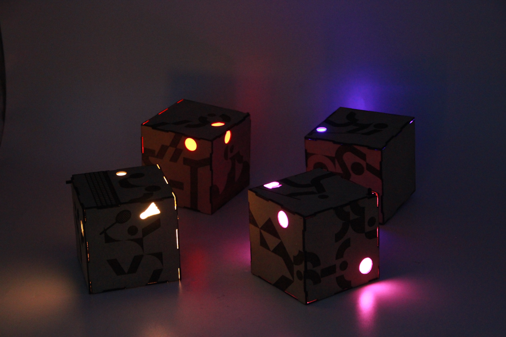

PICTOGRAM LIGHT
2022

PICTOGRAM LIGHT ピクトグラム・ライト CONCEPT 2020年東京オリンピックを観戦する中で、特に印象に残ったのが、50種類以上の競技を表現した動くスポーツピクトグラムだった。
1964年の東京オリンピックでは、言語の異なる人々にも競技や施設の情報が伝わるよう、視覚的な情報伝達の手段としてピクトグラムがデザインされた。一方、2020年の東京オリンピックでは、その伝達性を受け継ぎながら、平面的な図形に動きを加えることで、スポーツ選手の躍動感や競技の魅力そのものを表現していた。
この変化を通して、インフォグラフィックは単に情報を分かりやすく伝えるためのものではなく、動きや感情、空間的な広がりを生み出す表現にもなり得ることに気づいた。
それまで私にとってピクトグラムは、日常生活の中で案内や識別を助ける、便利さを象徴する標識のような存在だった。しかし、東京オリンピックで目にした表現をきっかけに、ピクトグラムが情報伝達の役割を超え、芸術的な表現へと発展できる可能性を感じた。
そこで本作品では、東京オリンピックで印象に残った球技種目をモチーフに、二次元のピクトグラムを三次元の立体物へと展開し、光を用いた新たな表現を試みた。 DESIGN & EXPERIENCE 本作品では、スポーツの動きや特徴を簡潔に伝えるピクトグラムを、立方体を基本とした立体構造に取り入れ、照明作品として再構成した。
立体の各面には、スポーツ選手の動きを抽象化したグラフィックを配置している。平面上では一つの図形として認識されるピクトグラムを複数の面へと展開することで、見る角度によって異なる表情が現れる構成とした。
さらに、立体の内部から光を透過させることで、ピクトグラムの形や配置が光と影によって浮かび上がるように設計した。暗い空間では、光の色や強さが周囲に反射し、単なるグラフィックだった図形が、空間全体に影響を与える存在へと変化する。
また、複数の立体を組み合わせて配置することで、それぞれが独立した照明でありながら、全体として一つの視覚的なまとまりを生み出すことを目指した。
二次元の情報を三次元の形へ、さらに光を伴う空間的な表現へと変換することで、ピクトグラムの持つ視覚的な力を再発見する。情報を伝えるための記号を、見る角度や周囲の環境によって印象が変化する立体作品へと展開することが、本作品のデザインにおける試みである。